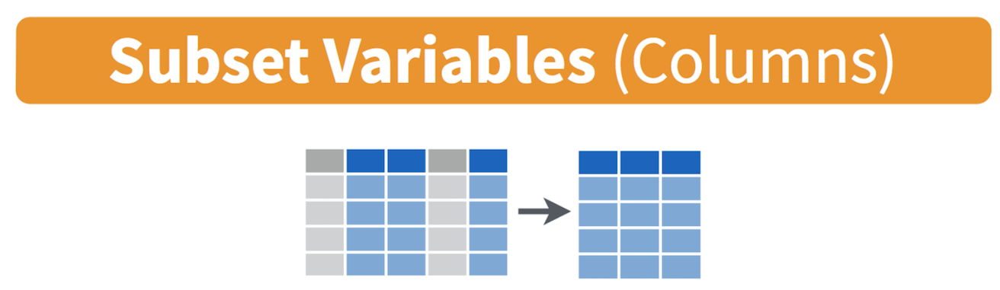
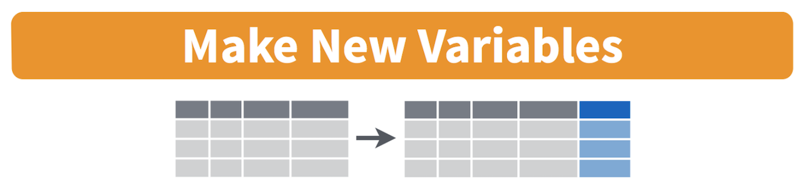

Data Wrangling
GEO 200CN - Quantitative Geography
Professor Noli Brazil
In this supplementary guide, you will learn how to use tidyverse functions to accomplish various data wrangling tasks. Data wrangling is the process of transforming raw data into a more usable form. It is relatively rare outside of the cloistered setting of a University classroom to have a clean data set ready for analysis. In fact, some estimate that data wrangling can take upwards of 80% to 90% of your data analysis time.
We will rely on tidyverse to demonstrate data wrangling in R because its consistency, together with the goal of increasing productivity, mean that the syntax of tidy functions is typically straightforward to learn. Because of time constraints, we will not be able to go through all of tidyverse’s functions in this guide. Some you will encounter in the course’s lab guides. Others you may need to learn on your own. The best resource is the book R for Data Science (RDS), which is free online and was written by tidyverse’s creators. You can also go straight to the tidyverse official website.
Tidyverse package
All of tidyverse’s functions are located in the package tidyverse. If you haven’t already done so, install the package.
install.packages("tidyverse")Remember that you will install packages once and never more (unless
you update R). Next, load the package in your current session using
library()
library(tidyverse)Unlike installing, loading a package using library()
needs to happen every time you start a new R session. Install once,
never more. Library every time you start R.
Reading and writing data
Let’s bring in some data to help illustrate the use of tidy R
functions. I uploaded a file on GitHub containing the number of
Hispanic, white, Asian, and black residents in 2018 in California
neighborhoods taken from the United States American Community
Survey. To import this file in R, use the read_csv()
command
neighborhoods <- read_csv("https://raw.githubusercontent.com/geo200cn/data/master/week2data.csv")To write or save data, you would use the function
write_csv().
tidyverse can read in more than just csv files. It
has a suite of read_ functions that are a part of the
subpackage readr. The goal of readr is
to provide a fast and friendly way to read rectangular data (like csv,
tsv, and fwf). It is designed to flexibly parse many types of data found
in the wild, while still cleanly failing when data unexpectedly changes.
To learn more about these functions, see readr’s
dedicated site.
Note the underscore in between read and
csv. There is a base R function called
read.csv(). What is the difference? The function
read.csv() stores your data into a regular data frame. The
function read_csv() stores your data in a special tidy R
object - a tibble, which we discuss next.
Tibbles
Although the tidyverse works with all data objects,
its fundamental object type is the tibble. Tibbles are essentially a
special variant of data
frames that have desirable properties for printing and joining. To
illustrate comparisons between tibbles and regular data frames, let’s
bring in the county data we downloaded above but using the base R
function read.csv()
neighborhoods.df <- read.csv("https://raw.githubusercontent.com/geo200cn/data/master/week2data.csv")The object neighborhoods.df is a regular data frame. The first difference between regular data frames and tibbles is how the dataset “looks.” First, the tibble.
neighborhoods## # A tibble: 7,937 × 7
## GEOID NAME hisp nhasn nhblk nhwhite tpopr
## <dbl> <chr> <dbl> <dbl> <dbl> <dbl> <dbl>
## 1 6019001100 Fresno 2033 24 552 81 2760
## 2 6071001600 San Bernardino 5325 11 18 94 5527
## 3 6019000200 Fresno 1935 317 416 153 2870
## 4 6077000801 San Joaquin 4977 1083 400 389 7352
## 5 6019001500 Fresno 1868 36 25 541 2475
## 6 6037204920 Los Angeles 2544 0 27 68 2639
## 7 6077000300 San Joaquin 1216 307 401 291 2240
## 8 6019001000 Fresno 2524 693 842 93 4231
## 9 6037206050 Los Angeles 1550 183 112 127 2010
## 10 6019000400 Fresno 4770 633 106 422 5958
## # ℹ 7,927 more rowsTibbles have a refined print method that shows only the first 10 rows, and only the columns that fit on the screen. In addition, each column reports its name and type.
Tibbles are designed so that you don’t accidentally overwhelm your console when you print large data frames. Compare the print output above to what you get with a data frame
neighborhoods.dfUgly, right?
Another important difference between tidy and base R is that
read_csv() will always read variables containing text as
character variables. In contrast, the base R function
read.csv() will sometimes convert a character variable to a
factor. Tidy R figures that if you really wanted a character, you can
easily convert it when you load it in. read_csv() will also
not convert numbers with a leading zero into an integer. It figures that
if you want to convert it into an integer, you can do it after the data
are read in. In contrast, read.csv() will assume you want
it in an integer. And you know what they say about assuming.
Data manipulation
One of the clear advantages of tidy R, at least when you are first learning R, is its assortment of user-friendly data manipulation functions, which is a part of its dplyr package. Compared to base R, the beauty of these dplyr functions is that they feature consistent design principles and easily work with non-standard evaluation (i.e., you don’t have to put quotes around variable names).
It is rare that the data you download are in exactly the right form for analysis. For example, you might want to analyze just Yolo county neighborhoods. Or you might want to discard certain variables from the dataset to reduce clutter. Or you encounter missing data. The process of gathering data in its raw form and molding it into a form that is suitable for its end use is known as data wrangling.
In this guide, we won’t have time to go through all of the methods and functions in R that are associated with the data wrangling process. Many methods you will have to learn on your own given the specific tasks you will need to accomplish. In the rest of this guide, we’ll go through some of the basic data wrangling techniques using the functions found in the package dplyr, which was automatically installed and loaded when you brought in the tidyverse package. These functions can be used for tibbles and regular data frames.
Renaming variables
You will likely encounter a variable in a dataset with a name that is
not descriptive. The more descriptive the names, the more efficient your
analysis will be and the less likely you are going to make a mistake. To
see the names of variables in your dataset, use the names()
command.
names(neighborhoods)## [1] "GEOID" "NAME" "hisp" "nhasn" "nhblk" "nhwhite" "tpopr"Use the command rename() to - what else? - rename a
variable! Let’s rename NAME to County.
neighborhoods <- rename(neighborhoods, County = "NAME")Selecting variables
In practice, most of the data files you will download will contain
variables you don’t need. It is easier to work with a smaller dataset as
it reduces clutter and clears up memory space, which is important if you
are executing complex tasks on a large number of observations. Use the
command select() to keep variables by name. Visually, we
are doing the following (taken from the RStudio cheatsheet)

Let’s keep County, GEOID, and hisp, nhwhite, nhblk and tpopr from the neighborhoods dataset.
select(neighborhoods, County, GEOID, hisp, nhwhite, nhblk, tpopr)## # A tibble: 7,937 × 6
## County GEOID hisp nhwhite nhblk tpopr
## <chr> <dbl> <dbl> <dbl> <dbl> <dbl>
## 1 Fresno 6019001100 2033 81 552 2760
## 2 San Bernardino 6071001600 5325 94 18 5527
## 3 Fresno 6019000200 1935 153 416 2870
## 4 San Joaquin 6077000801 4977 389 400 7352
## 5 Fresno 6019001500 1868 541 25 2475
## 6 Los Angeles 6037204920 2544 68 27 2639
## 7 San Joaquin 6077000300 1216 291 401 2240
## 8 Fresno 6019001000 2524 93 842 4231
## 9 Los Angeles 6037206050 1550 127 112 2010
## 10 Fresno 6019000400 4770 422 106 5958
## # ℹ 7,927 more rowsYou can use also use select() command to keep variables
except for the ones you designate. For example, to keep all
variables in neighborhoods except nhasn and save this
back into neighborhoods, type in
neighborhoods <- select(neighborhoods, -nhasn)
neighborhoodsThe negative sign tells R to exclude the variable.
Creating new variables
The mutate() function allows you to create new variables
within your dataset. This is important when you need to transform
variables in some way - for example, calculating a ratio or adding two
variables together. Visually, you are doing this

You can use the mutate() command to generate as many new
variables as you would like. For example, let’s construct three new
variables in neighborhoods - the percent of residents who are
non-Hispanic white, non-Hispanic black, and Hispanic. Name these
variables pwhite, pblack, and phisp,
respectively.
mutate(neighborhoods, pwhite = nhwhite/tpopr, pblack = nhblk/tpopr,
phisp = hisp/tpopr)Note that you can create new variables based on the variables you
just created in the same line of code. For example, you can create a
categorical variable yielding “Majority” if the tract is majority
Hispanic and “Not Majority” otherwise after creating the percent
Hispanic variable within the same mutate() command. Let’s
save these changes back into neighborhoods.
neighborhoods <- mutate(neighborhoods, pwhite = nhwhite/tpopr,
pblack = nhblk/tpopr, phisp = hisp/tpopr,
mhisp = ifelse(phisp > 0.5, "Majority","Not Majority"))
neighborhoodsWe used the function ifelse() to create mhisp -
the function tells R that if the condition phisp > 0.5
is met, the tract’s value for the variable mhisp will be
“Majority”, otherwise it will be “Not Majority”.
Filtering
Filtering means selecting rows/observations based on their values. To
filter in R, use the command filter(). Visually, filtering
rows looks like.

The first argument in the parentheses of this command is the name of the data frame. The second and any subsequent arguments (separated by commas) are the expressions that filter the data frame. For example, we can select Sacramento county
filter(neighborhoods, County == "Sacramento")The double equal operator == means equal to. We can also
explicitly exclude cases and keep everything else by using the not equal
operator !=. The following code excludes
Sacramento county.
filter(neighborhoods, County != "Sacramento")What about filtering if a neighborhood has a value greater than a specified value? For example, neighborhoods with a percent white greater than 0.5 (50%).
filter(neighborhoods, pwhite > 0.5)What about less than 0.5 (50%)?
filter(neighborhoods, pwhite < 0.5)Both lines of code do not include neighborhoods that have a percent
white equal to 0.5. We include it by using the less than or equal
operator <= or greater than or equal operator
>=.
filter(neighborhoods, pwhite <= 0.5)In addition to comparison operators, filtering may also utilize
logical operators that make multiple selections. There are three basic
logical operators: & (and), | is (or), and
! is (not). We can keep neighborhoods with phisp
greater than 0.5 and tpopr greater than 5000
using &.
filter(neighborhoods, phisp > 0.5 & tpopr > 5000)Use | to keep neighborhoods in Sacramento
or Yolo
filter(neighborhoods, County == "Sacramento" | County == "Yolo")Joining tables
Often you will have two datasets containing the same observations but with different variables. Your goal is to combine the datasets into a single one.
Let’s join a dataset containing some health and air pollution data
from California’s CalEnviroScreen
program. Read it in from GitHub using our new friend
read_csv().
ces <- read_csv("https://raw.githubusercontent.com/geo200cn/data/master/ces.csv")
names(ces)The dataset contains the poverty rate, air pollution levels (PM2.5), and whether the neighborhood is environmentally disadvantaged according to the CES. To join the objects ces and neighborhoods, we need a unique ID that connects the observations across the two files. This unique is named GEOID in both files. The IDs should be the same data class, which is the case.
class(ces$GEOID)## [1] "numeric"class(neighborhoods$GEOID)## [1] "numeric"To merge the datasets together, use the function
left_join(), which matches pairs of observations whenever
their keys or IDs are equal. We match on the variable GEOID and
save the merged data set into a new object called neighces.
neighces <- left_join(neighborhoods, ces, by = "GEOID")The argument by tells R which variable(s) to match rows on,
in this case GEOID. You can match on multiple variables and you
can also match on a single variable with different variable names (see
the left_join() help documentation for how to do this).
Other functions
If you have a dataset with a lot of variables, you might want to put
important variables at or close to the front. To relocate variables in
your dataset, use the function relocate(). Currently, this
is the order of variables in neighborhoods
names(neighborhoods)## [1] "GEOID" "County" "hisp" "nhblk" "nhwhite" "tpopr" "pwhite"
## [8] "pblack" "phisp" "mhisp"Use relocate() to move up tpopr right after
GEOID and County
neighborhoods <- relocate(neighborhoods, GEOID, County, tpopr)
names(neighborhoods)## [1] "GEOID" "County" "tpopr" "hisp" "nhblk" "nhwhite" "pwhite"
## [8] "pblack" "phisp" "mhisp"What if you want to arrange rows? Use the arrange()
function. Use the function head() to see what are the
observations at the top of your file
head(neighborhoods)## # A tibble: 6 × 10
## GEOID County tpopr hisp nhblk nhwhite pwhite pblack phisp mhisp
## <dbl> <chr> <dbl> <dbl> <dbl> <dbl> <dbl> <dbl> <dbl> <chr>
## 1 6019001100 Fresno 2760 2033 552 81 0.0293 0.2 0.737 Majo…
## 2 6071001600 San Bernardino 5527 5325 18 94 0.0170 0.00326 0.963 Majo…
## 3 6019000200 Fresno 2870 1935 416 153 0.0533 0.145 0.674 Majo…
## 4 6077000801 San Joaquin 7352 4977 400 389 0.0529 0.0544 0.677 Majo…
## 5 6019001500 Fresno 2475 1868 25 541 0.219 0.0101 0.755 Majo…
## 6 6037204920 Los Angeles 2639 2544 27 68 0.0258 0.0102 0.964 Majo…What if we wanted to sort the rows by population size in descending order?
neighborhoods <- arrange(neighborhoods, tpopr)
head(neighborhoods)## # A tibble: 6 × 10
## GEOID County tpopr hisp nhblk nhwhite pwhite pblack phisp mhisp
## <dbl> <chr> <dbl> <dbl> <dbl> <dbl> <dbl> <dbl> <dbl> <chr>
## 1 6075980300 San Francisco 66 0 0 55 0.833 0 0 Not M…
## 2 6017031900 El Dorado 75 4 0 69 0.92 0 0.0533 Not M…
## 3 6037575500 Los Angeles 92 80 0 12 0.130 0 0.870 Major…
## 4 6037930101 Los Angeles 92 0 0 48 0.522 0 0 Not M…
## 5 6037980019 Los Angeles 151 0 0 125 0.828 0 0 Not M…
## 6 6065940100 Riverside 166 25 0 135 0.813 0 0.151 Not M…To sort in descending order, add a - sign in front of
the variable
neighborhoods <- arrange(neighborhoods, -tpopr)
head(neighborhoods)## # A tibble: 6 × 10
## GEOID County tpopr hisp nhblk nhwhite pwhite pblack phisp mhisp
## <dbl> <chr> <dbl> <dbl> <dbl> <dbl> <dbl> <dbl> <dbl> <chr>
## 1 6073018700 San Diego 38932 10784 3414 22842 0.587 0.0877 0.277 Not Maj…
## 2 6073013310 San Diego 32326 14894 1135 4489 0.139 0.0351 0.461 Not Maj…
## 3 6107001003 Tulare 24719 13575 119 8656 0.350 0.00481 0.549 Majority
## 4 6077005206 San Joaquin 23903 5103 1698 7640 0.320 0.0710 0.213 Not Maj…
## 5 6059052420 Orange 23482 2415 0 7437 0.317 0 0.103 Not Maj…
## 6 6077003500 San Joaquin 23464 6583 1213 5464 0.233 0.0517 0.281 Not Maj…Function conflicts
You’ll learn to understand that R is beautiful. But, it isn’t perfect. One of its annoyances is that because R is open source, R users who contribute packages sometimes create functions with the same names. To demonstrate this, let’s load in the package MASS
library(MASS)You see the warning? Keep it in mind.
Let’s use the function select() again to keep the
variables GEOID and PM2.5 from neighces
select(neighces, GEOID, PM2.5)## Error in select(neighces, GEOID, PM2.5): unused arguments (GEOID, PM2.5)What in the world just happened? By loading MASS, we
have overwritten tidyverse’s select()
function (hence the warning when you loaded MASS). R
will choose the function from the package that was most recently loaded.
The normal workaround is to be explicit about which
select() function you want by using
dplyr::select() as in
dplyr::select(neighces, GEOID, PM2.5)## # A tibble: 7,937 × 2
## GEOID PM2.5
## <dbl> <dbl>
## 1 6019001100 15.4
## 2 6071001600 13.3
## 3 6019000200 15.4
## 4 6077000801 12.5
## 5 6019001500 15.4
## 6 6037204920 12.9
## 7 6077000300 13.4
## 8 6019001000 15.4
## 9 6037206050 12.9
## 10 6019000400 15.4
## # ℹ 7,927 more rowsTo unload a package (i.e. “unlibrary” it) use the
detach() function as follows.
detach("package:MASS")Pipes
One of the important innovations from the tidyverse
is the pipe operator %>%. Pipes are the
workhorse of tidy analyses. Piping allows you to chain together many
functions, eliminating the need to define multiple intermediate objects
to use as the input to subsequent functions. Pipes are also
the primary reason that tidyverse code is fundamentally
easier to read than base R code.
It may seem complicated at first, but what the pipe does is actually quite simple. That is, it allows users to write linear code. To illustrate the use of the pipe, consider the following base R code that takes the mean of the log of three numbers
mean(log(c(1, 3, 9)))## [1] 1.098612Notice how the numbers c(1, 3, 9) are nested inside
log(), which is then nested inside mean(). If
you’re reading the code from left-to-right, it means the functions are
performed in reverse order from how they are written. If we broke the
code down into its three functions, we would actually expect the order
of operations to proceed as follows
- Concatenate numbers into vector
c(...) - Log the numeric vector
log(...) - Estimate the mean of the logged numeric vector
mean(...)
Now consider how you would do this using pipes.
c(1, 3, 9) %>%
log() %>%
mean()## [1] 1.098612In contrast to the nested base code, the tidy code is linear; in other words, the code appears in the same order (moving from left to right) as the operations are performed. Let’s bring back our original neighborhoods dataset
neighborhoods <- read_csv("https://raw.githubusercontent.com/geo200cn/data/master/week2data.csv")and use pipes to
- rename the variable NAME to County
- keep all variables except nhasn
- create the percent race/ethnicity and majority Hispanic variables
- join the ces file
neighces <- neighborhoods %>%
rename(County = NAME) %>%
select(GEOID, County, hisp, nhblk, nhwhite, tpopr) %>%
mutate(pwhite = nhwhite/tpopr, phisp = hisp/tpopr,
pblk = nhblk/tpopr,
mhisp = ifelse(phisp > 0.5, "Majority","Not Majority")) %>%
left_join(ces, by = "GEOID")In the code above, the tibble neighborhoods is piped into
the command rename(). This command changes NAME to
County. The resulting object gets piped into the command
select(). And so on.
Piping makes code clearer, and simultaneously gets rid of the need to define any intermediate objects that you would have needed to keep track of while reading the code.

This
work is licensed under a
Creative
Commons Attribution-NonCommercial 4.0 International License.
Website created and maintained by Noli Brazil